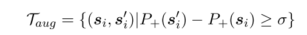
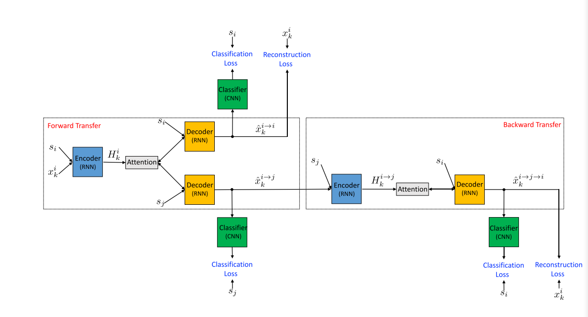

Twitter语言风格迁移
研究目标
能将正式表达改为具有twitter风格的口语表达
graph LR id1(Formal English) --> id2(Twitter Style)
Twitter 语言风格
这里所称的twitter风格其实泛指为社交媒体风格，或者是网络用语风格+口语风格
1. 语气
1 | 哈哈：lol |
2. 网络用语/缩写/大写
lol
3. 非正式用语
4. 表情符
😊 🤔 🤣
论文阅读
低资源文本风格迁移数据集
同时进行 Sequence2Sequence 和风格迁移两个任务
着重关注TCFC任务
TCFC 的任务定义为，给定一个推特(Twitter)风格的对话上文，给出正规而礼貌的对话回复。
TCFC 提供170万的推特对话语料以及52,595 informal to formal English text pairs borrowed from the GYAFC作为训练数据。包括三个数据集：
- 平行数据集$D$ : 文本到源风格句子对（Twitter）
- 平行数据集$S$ ： 源风格到目标风格句子对 （GYAFC）
- 非平行数据集$M_t$ ： 正式风格的句子（GYAFC）
TCFC 的验证集和测试集分别包含980和978个样例（改写非正式回复为正式回复）。
衡量了三种基线模型：
- Pivot-based
- Teacher-student
- Back-translation
Style Transfer in Text: Exploration and Evaluation
基于非平行数据
任务：paper-news title transfer, and positive-negative review transfer
模型： 两种模型都基于 neural sequence to sequence model.
- multi-decoder
- style-embedding
评价标准：
- transfer strength
- content preservation
Parallel Data Augmentation for Formality Style Transfer
作者针对 formal 风格迁移任务提出了三种数据增强方法，来获得更多有用的句子对
方法：
-
Back Translation：机器翻译中很常见的一种方数据增强方法，将目标语言使用训练好的翻译模型翻译成原语言，构成伪句子对。先用已有的平行语料（informal--formal）训练一个 seq2seq 模型，然后将目标语句中 formal 的语句喂给这个 seq2seq 模型，生成 informal 句子，形成伪句子对 informal—formal，来扩充平行语料 -
Formality discrimination：先将 informal 英语句子翻译成另一种语言（如法语），然后将翻译回英语使用带 formal 标签的语料训练一个 CNN 来给句子打分，如果大于阈值，则被选为 伪平行语料

multi-task transfer：使用其它任务中带注释的句子对，观察到 inform l的句子通常语法是错误的，而 formal 的句子语法是对的，因此可以将 GEC（Grammatical error correction） 模型所用到的训练数据集直接扩充到现有的平行语料
模型：
-
使用 transformer（base）作为 seq2seq 模型
-
训练方法：使用增强的数据进行预训练，再用现有的平行语料进行微调
Style Transfer from Non-Parallel Text by Cross-Alignment
作者聚焦于非平行语料文本的风格迁移，针对其研究难点：如何将文本内容与属性分离开来，提出假设跨不同文本语料库共享潜在内容分布，并利用潜在表示的精确对齐来执行风格迁移的方法
数据集：YELP
数据处理同 Hu et al 2017 (Toward Controlled Generation of Text）
Fighting Offensive Language on Social Media with Unsupervised Text Style Transfer
任务：在社交媒体上，常会出现一些攻击性的语言，这给我们的社交环境带来了很不良的影响，作者基于此提出一种将攻击性的语言转换成非攻击性语言的模型
方法：由于不存在平行语料，采用的是无监督学习，作者提出了一种结合 collaborative classifier 、注意力机制和 cycle consistency loss 的编码器-解码器的新方法。
整个模型结构设计的还是蛮简单的，如下图（为了能够更清楚的表达，作者用来多个编码器-解码器、分类器来说明，在实际实验时，都只有一个）：

A Dual Reinforcement Learning Framework for Unsupervised Text Style Transfer
本文是腾讯微信Al和北大计算语言所发表在 ACL 2019上的论文，关注的是无监督的文本风格转换任务。
已有工作往往基于分步走的策略：先从文本中分离出内容，再通过一个风格融合模块来进行目标风格文本的生成，而这种策略无法捕获内容与风格之间的隐式关联，容易造成内容缺失等问题。
为了解决这个问题，作者基于Dual RL框架，分别学习了两个seq2seq模型，一个负责将源输入转换为目标风格输出，另一个恰好相反，这样就能直接完成输入到输出的转换而不需要分步走。
reward是调和平均风格奖赏（分类器判定为目标风格的概率）和内容奖赏(通过生成的文本重构原文本的概率），训练的时候交替更新两个seq2seq直到收敛。另外，为了解决强化学习在生成过程中容易遇到的两个问题:需要预训练和在rl过程中语言模型容易崩坏，作者通过基于模板的方法来构建伪并行语料集来完成预训练，并且提出了Annealing Pseudo Teacher-Forcing 来缓解后一问题。
实验部分，文章提出的模型在YELP(情感极性转换）和GYAFC （formality transfer）都取得了最佳的性能，并且发现RL方法对于风格迁移的准确度有所提升，但是在流畅程度上相比 MLE有所欠缺。